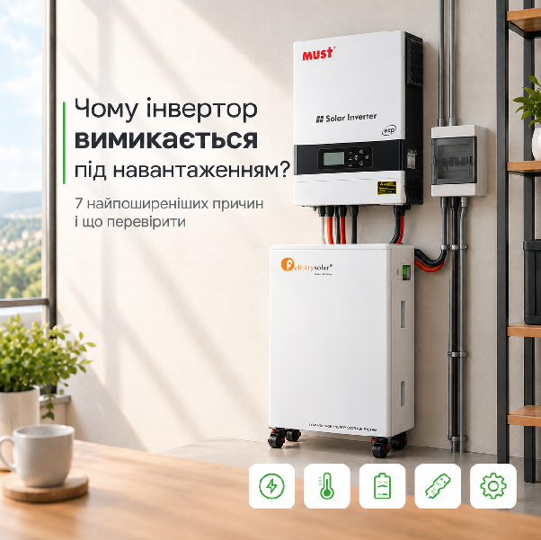

Чому інвертор вимикається під навантаженням: 7 найпоширеніших причин
Розбираємо сім найпоширеніших причин, чому гібридний інвертор вимикається під навантаженням: від перевантаження і перегріву до BMS, кабелів і несумісного комплекту.
Інвертор нормально працює, поки навантаження невелике, але щойно вмикається чайник, холодильник, насос або інший потужний прилад - система раптом вимикається. Знайома ситуація?
І це не обов'язково означає, що з інвертором щось не так. Часто він вимикається саме тому, що спрацьовує захист від перевантаження, перегріву, низької напруги чи інших небезпечних режимів роботи.
Розберімо сім найпоширеніших причин такого вимкнення і що можна перевірити в кожному випадку.
1. Інвертор перевантажений
Найочевидніша причина - сумарна потужність підключених приладів перевищує можливості інвертора.
Наприклад, інвертор розрахований на 5 кВт, а одночасно працюють бойлер на 2 кВт, чайник на 2 кВт, холодильник і ще кілька приладів. У момент запуску навантаження може виявитися більшим за допустиме.
Важливо враховувати не лише номінальну, а й пікову потужність. Деякі прилади на старті споживають у кілька разів більше, ніж під час звичайної роботи.
Якщо інвертор вимикається в момент, коли одночасно запускається кілька потужних приладів, варто насамперед перевірити, чи не перевищує їхнє загальне споживання можливості інвертора.
Що робити: вимкнути частину приладів і перевірити, чи продовжує інвертор працювати. Якщо проблема зникає - ймовірно, справа саме в перевантаженні.
2. Акумулятор просідає під навантаженням
Інвертор може показувати нормальну напругу батареї без навантаження, але після підключення потужного приладу напруга різко падає.
Наприклад, акумулятор заряджений на пристойний відсоток, але при запуску навантаження напруга просідає настільки, що інвертор сприймає це як критично низький рівень заряду і вимикається.
Особливо часто таке трапляється, коли батарея вже зношена, має недостатню ємність або не розрахована на потрібний струм розряду.
Що перевірити: напругу акумулятора без навантаження і під час роботи потужного приладу. Якщо різниця дуже суттєва - проблема може бути саме на стороні батареї.
3. BMS обмежує струм
У LiFePO4-акумуляторах є BMS - система, яка контролює роботу батареї та захищає її від надмірного струму, глибокого розряду та інших небезпечних режимів.
Якщо інвертор намагається взяти від акумулятора більший струм, ніж дозволено BMS, батарея може відключити розряд.
Наприклад, для інвертора на 5 кВт при напрузі 48 В струм від акумулятора може перевищувати 100 А. Якщо батарея не розрахована на таке навантаження, проблеми з'являться саме в момент підключення потужного приладу.
Тому при виборі акумулятора важливо дивитися не лише на його ємність у Ah, а й на допустимий струм розряду та характеристики BMS.
4. Інвертор перегрівається
Інвертор перетворює енергію не без втрат, тому під час великого навантаження він нагрівається. Якщо вентиляція недостатня, температура всередині корпусу може піднятися до критичного рівня. Тоді інвертор автоматично зменшує потужність або повністю вимикається.
Проблема може виникати, якщо обладнання встановлене в тісній шафі, біля джерела тепла або вентиляційні отвори перекриті пилом.
Зазвичай у такій ситуації інвертор працює нормально деякий час, а потім вимикається, коли нагрівається до критичної температури. Після охолодження він знову може запуститися.
Що робити: перевірити температуру, вентиляцію навколо інвертора та стан вентиляторів.
5. Проблема з кабелями або контактами
Іноді причина нестабільної роботи зовсім не в інверторі, а в підключенні акумулятора.
Якщо кабель має недостатній переріз, занадто велику довжину або ненадійне з'єднання, під час великого навантаження напруга на вході інвертора може помітно просідати. У такій ситуації інвертор може сприйняти це як низьку напругу акумулятора та перейти в захист.
Особливо це важливо для потужних 48-вольтових систем, де під час роботи інвертора через кабелі проходять великі струми.
Тому варто перевірити не лише самі кабелі, а й усі з'єднання: чи добре затягнуті клеми, чи немає окислення та чи не нагріваються контакти під навантаженням.
Важливо: якщо кабель або контакт сильно нагрівається, експлуатувати систему в такому режимі не варто - спочатку потрібно усунути проблему.
6. Пусковий струм приладу занадто великий
Є прилади, які під час роботи споживають небагато, але при запуску створюють короткочасний великий стрибок потужності.
Найтиповіші приклади:
- холодильники та морозильні камери
- насоси
- компресори
- кондиціонери
- деякі електроінструменти
Наприклад, холодильник під час звичайної роботи споживає небагато, але в момент запуску компресора йому потрібен значно більший струм.
Тому якщо інвертор стабільно працює, але вимикається саме в момент запуску холодильника, насоса чи іншого приладу з електродвигуном, причина може бути саме в пусковому навантаженні.
У такому випадку важливо враховувати не лише номінальну потужність інвертора, а й те, яке пікове навантаження він здатен витримати протягом короткого часу.
7. Неправильно налаштований або несумісний комплект
Ще одна причина - налаштування інвертора або невідповідність параметрів між інвертором та акумулятором.
Наприклад, можуть бути неправильно задані:
- пороги відключення за низькою напругою
- максимальний струм заряду або розряду
- тип акумулятора
- параметри BMS-комунікації
- робоча напруга системи
У результаті інвертор може вимикатися навіть тоді, коли обладнання фізично здатне працювати з таким навантаженням.
Особливо важливо перевіряти сумісність конкретної моделі інвертора з конкретною батареєю, а не орієнтуватися лише на те, що обидва пристрої працюють, наприклад, у системі 48 В.
Як швидко зрозуміти, у чому проблема
Є простий спосіб звузити коло пошуку - звернути увагу коли саме вимикається інвертор.
- Вимикається одразу після підключення кількох потужних приладів. Найімовірніша причина - перевантаження
- Вимикається саме під час запуску насоса або холодильника. Найімовірніша причина - пусковий струм
- Напруга батареї різко падає під навантаженням. Найімовірніша причина - просідання акумулятора
- Батарея відключається повністю. Найімовірніша причина - спрацювання BMS
- Вимикається після тривалої роботи. Найімовірніша причина - перегрів
- На клемах або кабелях відчутний сильний нагрів. Найімовірніша причина - кабель або контакт
- Проблема виникла після зміни батареї чи налаштувань. Найімовірніша причина - налаштування або сумісність
Що перевірити перед зверненням до сервісу
Якщо інвертор вимикається під навантаженням, не варто одразу робити висновок, що він зламався.
Спочатку варто:
- подивитися код помилки або повідомлення на дисплеї
- перевірити потужність усіх увімкнених приладів
- подивитися напругу акумулятора без навантаження та під навантаженням
- перевірити температуру інвертора
- оглянути кабелі та клемні з'єднання
- з'ясувати, чи не спрацьовує захист BMS
- перевірити налаштування інвертора та параметри акумулятора
Якщо після цього причина залишається незрозумілою, краще не експериментувати з налаштуваннями навмання. Для потужних автономних систем неправильні параметри можуть призвести не лише до нестабільної роботи, а й до пошкодження обладнання.
Висновок
Вимкнення інвертора під навантаженням ще не означає, що він несправний. У багатьох випадках це звичайна робота системи захисту, яка спрацьовує через перевантаження, перегрів, низьку напругу або надмірний струм.
Тому замість того, щоб просто перезапускати інвертор, варто спочатку з'ясувати, який саме захист спрацював і чому.
А якщо система тільки планується, більшість таких проблем можна попередити ще на етапі підбору обладнання. Важливо врахувати не лише потужність інвертора, а й пускові струми приладів, характеристики акумулятора та BMS, переріз кабелів і сумісність усіх компонентів. Такий підхід допоможе уникнути неприємних сюрпризів уже під час експлуатації.